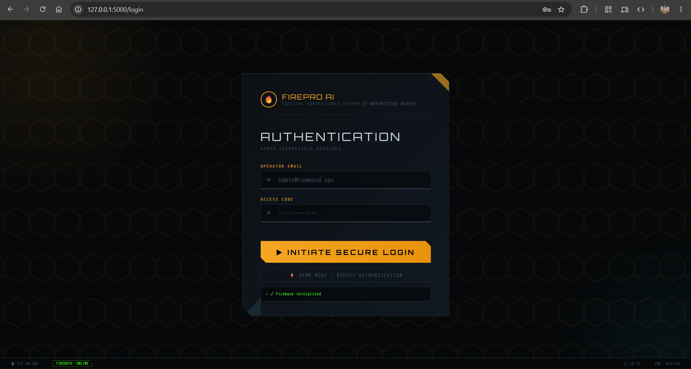
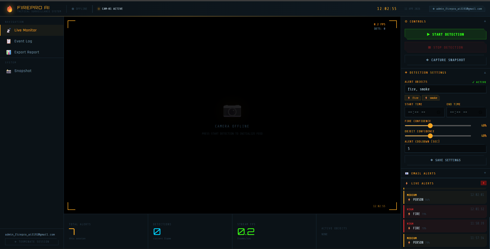
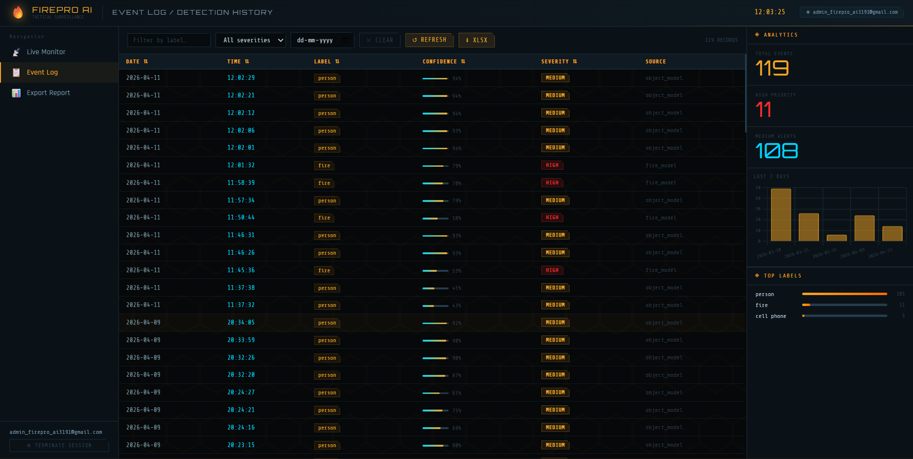
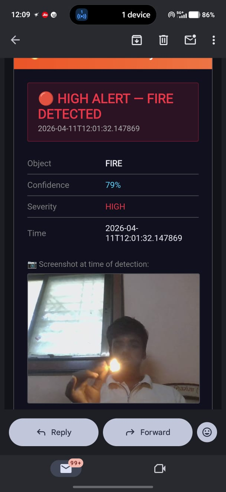
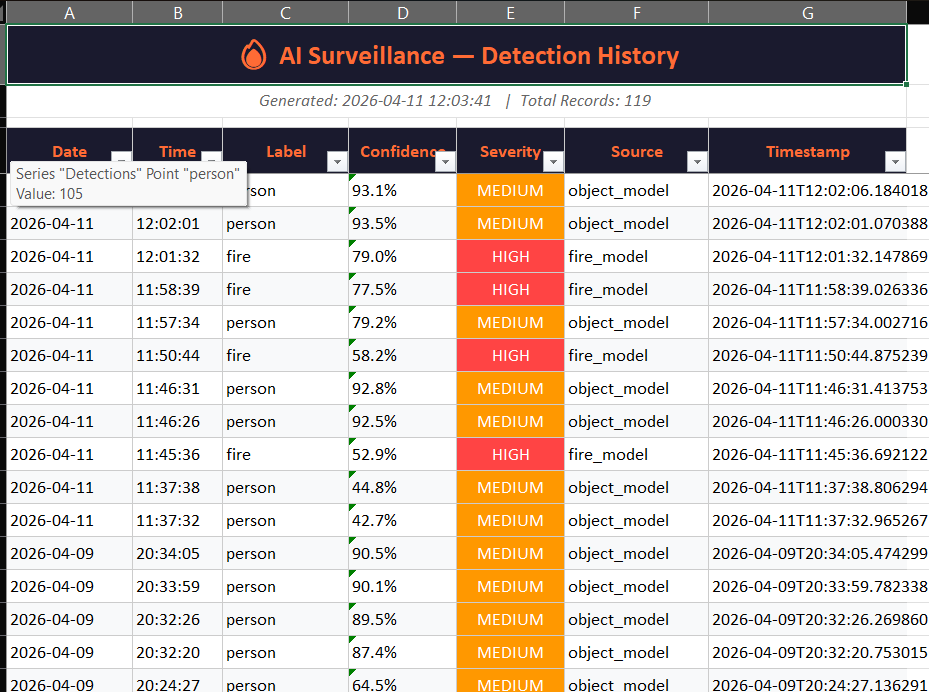
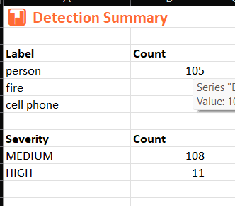

The Project Concept
FirePro AI is an intelligent fire and hazard detection system developed using Python, Flask, OpenCV, YOLOv8, Firebase, and Socket.IO technologies. The system continuously monitors live camera feeds and detects fire, smoke, and human presence in real time using advanced deep learning models.
The application consists of multiple integrated modules including a Live Monitoring System, Alert Management Module, Snapshot & Recording System, Event Logging Module, and Report Export Module. FirePro AI processes live video streams and instantly identifies hazardous events with confidence scores and severity levels.
When fire or smoke is detected, the system automatically generates alerts containing object type, confidence score, severity level, timestamp, and captured screenshots. Notifications are sent via email and displayed on a modern monitoring dashboard to enable rapid emergency response.
The platform also supports event history tracking, Excel report generation, screenshot capture, customizable detection confidence thresholds, alert cooldown settings, and object filtering. FirePro AI provides a smart automated surveillance solution that minimizes human intervention and improves safety in homes, industries, offices, and public environments.
User Interface Preview
Overview of FirePro AI monitoring and detection workflow.






Tech Stack
- Backend: Python, Flask
- Computer Vision: OpenCV
- AI Model: YOLOv8
- Database: Firebase Firestore
- Realtime: Socket.IO
- Reports: OpenPyXL Excel Export
Key Features
- Real-Time Fire Detection
- Smoke Detection & Monitoring
- Human Presence Detection
- Automated Email Alerts
- Live Camera Surveillance
- Detection History Tracking
- Screenshot Evidence Capture
- Excel Report Export
- Configurable Alert Settings
- Smart Hazard Surveillance